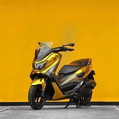
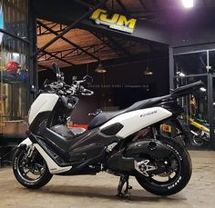
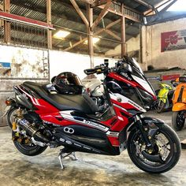
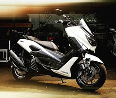
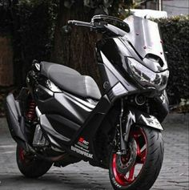
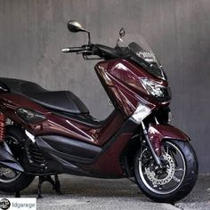
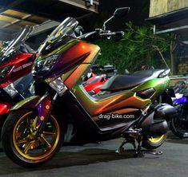
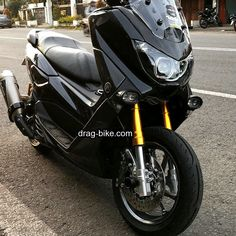
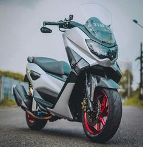

kuroko.max
Cari ...
- Utama
- Umum
- Permintaan (14)

coco.max
1 jam yang lalu

tamara.max
2 jam yang lalu

blckmamba_
4 jam yang lalu

taro.max
5 jam yang lalu

ara.max
8 jam yang lalu

airaco00
8 jam yang lalu

venom_69
9 jam yang lalu

paramex.05
13 jam yang lalu

labil.max
13 jam yang lalu

kotaro.max
15 jam yang lalu